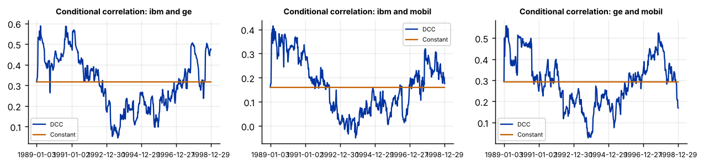

Run this model on your own data in Open Econometric Systems →
Step 1The question and the model
Is the correlation between two assets a constant? A constant correlation makes portfolio risk easy to compute, but it is unlikely to be true: diversification tends to fail when it is needed most. The DCC model of Engle (2002) has two steps. First each return follows a univariate GARCH(1,1):
Second, the standardised residuals \(z_t\) have the conditional correlation matrix \(R_t\) obtained from
where \(\bar S\) is the unconditional correlation of the standardised residuals. The parameter \(a\) says how much the correlation reacts to yesterday's joint shock, \(b\) how persistent it is. If \(a = b = 0\) the correlation is constant.
How to write it: the model
We estimate a DCC-GARCH model (Engle 2002) for the daily returns of three stocks. In the first step each return has a GARCH(1,1) model estimated by Gaussian quasi-maximum likelihood. In the second step the correlation of the standardised residuals follows the DCC recursion, estimated by maximum likelihood with the first-step estimates as given. We test constant correlation (a = b = 0) with a likelihood-ratio test, and check that the standardised residuals have no remaining ARCH.
Step 2Load the data
import numpy as np
import pandas as pd
import oes_engine as oes # pip install -e open-econometric-systems/oes-engine
data = open("crspday.csv").read()
d = pd.read_csv("crspday.csv")
print(len(d), "days,", d.date.iloc[0], "to", d.date.iloc[-1])
print((100 * d[["ibm", "ge", "mobil", "crsp"]].agg(["mean", "std"])).round(3))
print("unconditional correlations:")
print(d[["ibm", "ge", "mobil"]].corr().round(3))2528 days, 1989-01-03 to 1998-12-31
ibm ge mobil crsp
mean 0.07 0.107 0.078 0.068
std 1.75 1.372 1.292 0.776
unconditional correlations:
ibm ge mobil
ibm 1.000 0.334 0.159
ge 0.334 1.000 0.297
mobil 0.159 0.297 1.000How to read it
The three stocks have daily volatilities of 1.75% (IBM), 1.37% (GE) and 1.29% (Mobil) against 0.78% for the market, over 2,528 days from January 1989 to December 1998. The unconditional correlations are moderate: 0.33 for IBM and GE, 0.30 for GE and Mobil and 0.16 for IBM and Mobil. A single number per pair is what the DCC model replaces with a path.
Step 3Estimate
spec = dict(y=["ibm", "ge", "mobil"], time="date")
r = oes.run("dcc", data, spec)
oes.summary(r)
oes.show(r, "Step 1")
oes.show(r, "Step 2")Observations: 2528
DCC a: 0.0093
DCC b: 0.9869
LR against constant correlation: 109.86
Step 1: univariate GARCH(1,1) for each series
Mean omega alpha beta alpha + beta Long-run volatility Ljung-Box p (squared residuals, 10 lags)
Series
ibm 0.0008 4.0000e-06 0.0376 0.9501 0.9877 0.0186 0.7383
ge 0.0011 4.0000e-06 0.0566 0.9253 0.9819 0.0143 0.1575
mobil 0.0009 3.0000e-06 0.0513 0.9293 0.9806 0.0133 0.0254
Note: Gaussian quasi-maximum likelihood; the last column tests for remaining ARCH in the standardised residuals.
Step 2: DCC parameters
Estimate s.e. t
Parameter
a (news) 0.0093 0.0023 4.1029
b (persistence) 0.9869 0.0034 287.0956
a + b 0.9962 NaN NaN
Note: Standard errors treat the first-stage estimates as given.How to read it
Step 1. Each GARCH(1,1) is highly persistent: \(\alpha + \beta\) is 0.988 for IBM, 0.982 for GE and 0.981 for Mobil, with long-run daily volatilities of 1.9%, 1.4% and 1.3%. The Ljung-Box p-values of the squared standardised residuals are 0.74, 0.16 and 0.025: there is no remaining ARCH for IBM and GE, and a slight remainder for Mobil.
Step 2. The correlation recursion has \(a = 0.0093\) (standard error 0.0023, t = 4.1) and \(b = 0.9869\) (0.0034). The news term is small and significant and the persistence is very high: \(a + b = 0.996\), so a shock to the correlation takes a long time to die out (the half-life is about \(\ln 0.5 / \ln 0.996\), roughly 180 trading days). The standard errors treat the first-step estimates as known.
Step 4The correlations over time
oes.show(r, "Conditional correlations")
oes.show(r, "Test of time-varying correlation")
oes.plot(r)Conditional correlations
Unconditional Mean Min Max 5th percentile 95th percentile
Pair
ibm / ge 0.3167 0.3147 0.0437 0.5991 0.0978 0.5287
ibm / mobil 0.1602 0.1655 -0.0655 0.4362 0.0064 0.3613
ge / mobil 0.2932 0.2962 0.0204 0.7154 0.1101 0.4964
Test of time-varying correlation
Statistic p-value Detail
Test
Dynamic against constant correlation (LR) 109.8631 0.0 2 df; a = b = 0 is on the boundary, so the p-value is conservative
How to read it
The conditional correlation of IBM and GE averages 0.31 (close to the unconditional 0.32) but ranges from 0.04 to 0.60, with 90% of days between 0.10 and 0.53. IBM and Mobil range from \(-0.07\) to 0.44 and GE and Mobil from 0.02 to 0.72. The likelihood-ratio test of a constant correlation gives 109.9 with 2 degrees of freedom (p < 0.0001); the parameters are on the boundary under the null, which makes the usual p-value conservative, so the rejection stands. The charts show the DCC correlation against the constant one.
Step 5Do correlations rise when the market is volatile?
ch = r["charts"][0] # ibm / ge correlation, thinned every k-th day
k = max(1, len(d) // 500)
rho = pd.Series(ch["series"][0]["y"], index=pd.to_datetime(ch["x"]))
mkt = d.set_index(pd.to_datetime(d.date)).crsp.iloc[::k]
vol = mkt.abs().rolling(10, min_periods=5).mean()
vol = vol.reindex(rho.index)
hi = vol >= vol.quantile(0.9)
lo = vol <= vol.quantile(0.5)
print("average ibm-ge correlation on the 10%% most volatile days of the market: %.3f" % rho[hi].mean())
print("average ibm-ge correlation on the calmest half of the days: %.3f" % rho[lo].mean())
print("correlation between the market's 10-day absolute return and the DCC correlation: %.3f" % rho.corr(vol))average ibm-ge correlation on the 10% most volatile days of the market: 0.475 average ibm-ge correlation on the calmest half of the days: 0.268 correlation between the market's 10-day absolute return and the DCC correlation: 0.499
How to read it
On the 10% of days with the highest recent market volatility (the 10-day mean absolute return of the market index), the IBM-GE correlation averages 0.475; on the calmest half of the days it averages 0.268. The correlation between the market's recent volatility and the DCC correlation is 0.50. Correlations are higher when the market is turbulent, the feature that makes diversification weaker in a crisis; a constant-correlation model misses it. (The check uses every fifth day of the sample, as in the chart.)
Step 6Robustness: the pair and the sub-sample
pair = oes.run("dcc", data, dict(y=["ibm", "ge"], time="date"))
oes.show(pair, "Step 2")
oes.show(pair, "Conditional correlations")
half = len(d) // 2
for name, part in (("first half", d.iloc[:half]), ("second half", d.iloc[half:])):
rh = oes.run("dcc", part.to_csv(index=False), dict(y=["ibm", "ge"], time="date"))
p2 = rh["tables"][1]["rows"]
print(name, " a = %.3f b = %.3f LR vs constant = %.1f" % (p2[0][1], p2[1][1], rh["summary"][3]["value"]))Step 2: DCC parameters
Estimate s.e. t
Parameter
a (news) 0.0091 0.003 3.0308
b (persistence) 0.9888 0.004 245.7208
a + b 0.9979 NaN NaN
Note: Standard errors treat the first-stage estimates as given.
Conditional correlations
Unconditional Mean Min Max 5th percentile 95th percentile
Pair
ibm / ge 0.3167 0.3147 0.0185 0.6253 0.0787 0.5525
first half a = 0.010 b = 0.987 LR vs constant = 47.1
second half a = 0.034 b = 0.905 LR vs constant = 18.0How to read it
Estimating the IBM-GE pair alone gives almost the same dynamics (\(a = 0.009\), \(b = 0.989\)) and a correlation range of 0.02 to 0.63. Splitting the sample in half shows that the dynamics are not stable: in the first half \(a = 0.010\) and \(b = 0.987\); in the second half \(a = 0.034\) and \(b = 0.905\), a correlation that reacts more and fades faster. The likelihood-ratio test still rejects a constant correlation in both halves (47.1 and 18.0). If you use the correlation for risk, re-estimate it on recent data and report both halves.
Step 7Diagnostics: does the estimator recover the dynamics?
def sim_dcc(n, a, b, seed):
rng = np.random.default_rng(seed); S = np.array([[1, 0.4], [0.4, 1.0]]); Q = S.copy(); out = np.empty((n, 2)); h = np.ones(2); zp = np.zeros(2)
for t in range(n):
Q = (1 - a - b) * S + a * np.outer(zp, zp) + b * Q
dd = 1 / np.sqrt(np.diag(Q)); R = Q * np.outer(dd, dd)
z = np.linalg.cholesky(R) @ rng.normal(size=2); out[t] = np.sqrt(h) * z
h = 0.05 + 0.08 * out[t] ** 2 + 0.88 * h; zp = z
return pd.DataFrame(dict(t=range(n), x=out[:, 0], y=out[:, 1]))
est = []
for s in range(10):
rs = oes.run("dcc", sim_dcc(3000, 0.05, 0.90, s).to_csv(index=False), dict(y=["x", "y"], time="t"))
est.append([rs["tables"][1]["rows"][0][1], rs["tables"][1]["rows"][1][1]])
est = np.array(est)
print("true a = 0.05, b = 0.90")
print("mean estimate over 10 samples: a = %.3f, b = %.3f" % tuple(est.mean(0)))
print("s.d. across samples: a = %.3f, b = %.3f" % tuple(est.std(0)))true a = 0.05, b = 0.90 mean estimate over 10 samples: a = 0.052, b = 0.873 s.d. across samples: a = 0.013, b = 0.037
How to read it
In 10 simulated series of 3,000 days with true \(a = 0.05\) and \(b = 0.90\), the mean estimates are \(a = 0.052\) and \(b = 0.873\), with standard deviations across samples of 0.013 and 0.037. The news coefficient is recovered and the persistence is slightly underestimated, which is a known bias of the DCC estimator when the true persistence is lower than 0.98. The test suite also checks the first-step GARCH estimates against the arch package (parameters within 0.01 and log-likelihood within 1) and that a constant correlation of 0.5 is recovered.
Step 8Write the results
How to write it: results
We estimate a DCC-GARCH model for the daily returns of IBM, GE and Mobil, January 1989 to December 1998 (2,528 days). The univariate GARCH(1,1) models are persistent (\(\alpha + \beta\) between 0.98 and 0.99) and leave no ARCH in the standardised residuals of IBM and GE. The correlation recursion has \(a = 0.0093\) (s.e. 0.0023) and \(b = 0.9869\) (0.0034). A likelihood-ratio test rejects a constant correlation (LR = 109.9, 2 df, p < 0.0001). The conditional correlation of IBM and GE averages 0.31 and ranges from 0.04 to 0.60; it is 0.48 on the 10% most volatile days of the market and 0.27 on the calmest half. The dynamics differ between sub-samples (\(a = 0.010\) and 0.034 in the first and second half). In simulation the estimator recovers the news parameter (0.052 for a true 0.05) and slightly underestimates the persistence (0.873 for 0.90).
References. Engle (2002), Journal of Business and Economic Statistics; Bollerslev (1990), Review of Economics and Statistics; Engle and Sheppard (2001), NBER Working Paper 8554; Aielli (2013), Journal of Business and Economic Statistics; Longin and Solnik (2001), Journal of Finance; Bollerslev (1986), Journal of Econometrics.